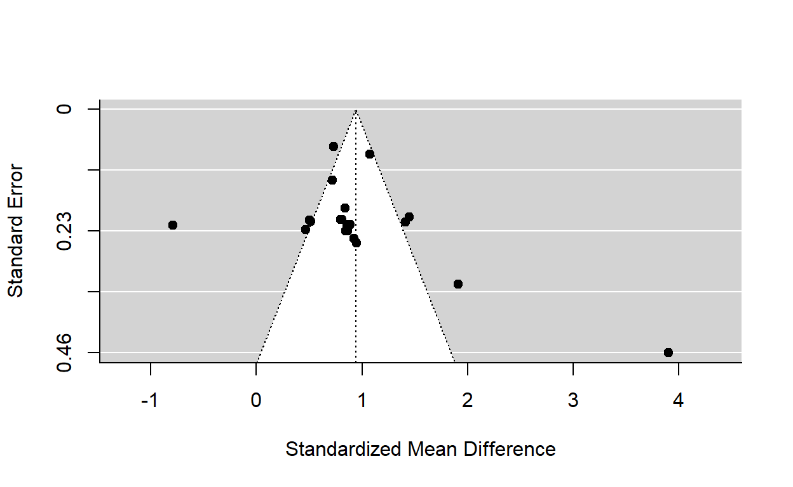
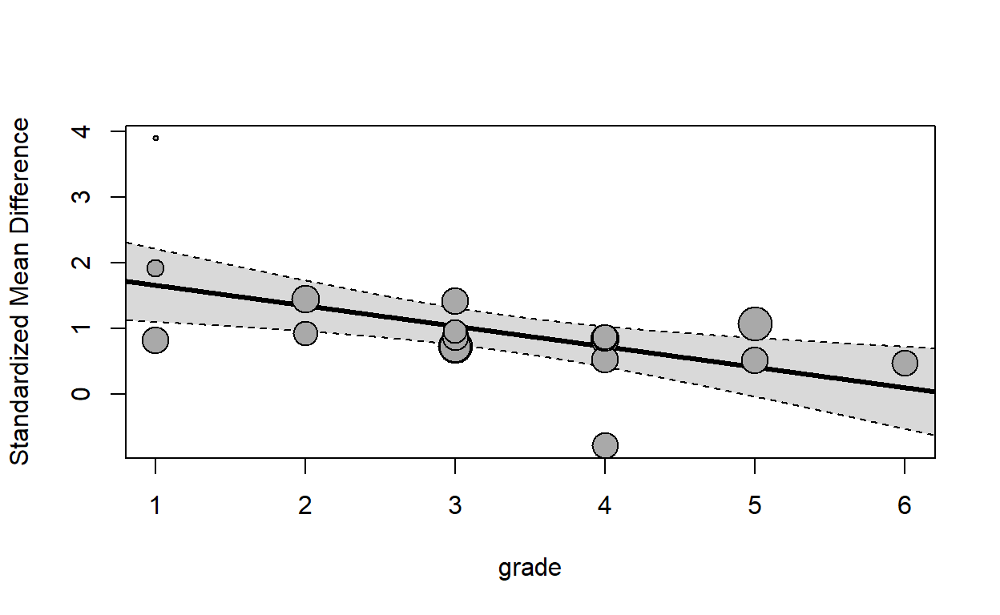
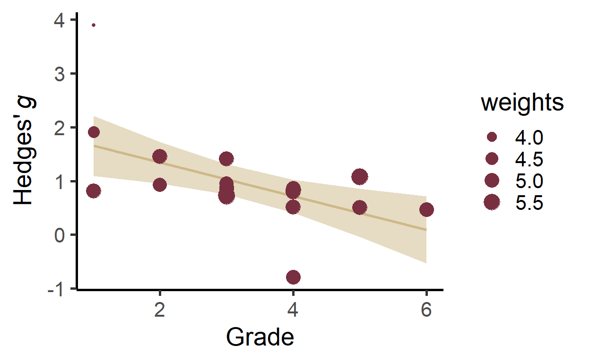

In this blog I’ll be walking you through the basic steps of a meta-analysis using metafor.
I’m TA’ing for a meta-analysis course and the final tutorial I gave at the end of the course was to put together everything we had so far to conduct a meta-analysis from start (e.g., importing the data) to finish (e.g., creating publication ready figures).
This is a fake data set (created by Rick Wagner, the instructor for the meta-analysis course at FSU) consisting of 20 studies with a between-group design. In this case, the story behind the data set is that these are studies examining some kind of intervention for reading.
First we will load the packages we need. If you don’t have metafor or the tidyverse go ahead and run install.packages for both of those.
Next, we will import the data. Because the data set is in the same directory as my working directory, along with the code, I don’t need to specify the path.
dat <- read_csv('metafordata.csv')
It is always a good idea to take a look at your data after you read it in to make sure it looks like you expect it to look. To do that, I’m going to use the glimpse function.
glimpse(dat)
Rows: 20
Columns: 8
$ Study <dbl> 1, 2, 3, 4, 5, 6, 7, 8, 9, 10, 11, 12, 13, 14, 15, 1~
$ EXPmean <dbl> 103.2, 105.7, 107.2, 110.4, 109.6, 106.9, 102.4, 123~
$ EXPsd <dbl> 5.5, 4.8, 4.7, 5.2, 6.0, 5.5, 4.9, 5.1, 6.4, 3.9, 7.~
$ EXPn <dbl> 50, 60, 40, 35, 450, 40, 45, 60, 30, 320, 37, 46, 43~
$ CONmean <dbl> 100.4, 98.7, 103.2, 105.4, 105.2, 104.3, 106.3, 119.~
$ CONsd <dbl> 5.5, 4.8, 4.7, 5.2, 6.0, 5.5, 4.9, 5.1, 6.4, 3.9, 7.~
$ CONn <dbl> 45, 63, 43, 35, 425, 40, 45, 65, 24, 320, 37, 46, 50~
$ grade <dbl> 5, 2, 4, 3, 3, 6, 4, 4, 1, 5, 2, 4, 3, 3, 1, 1, 3, 4~From this we can see we have 20 studies (i.e., rows), means, standard deviations, and sample sizes for each of our groups. We also have a moderator variable called grade that shows what grade level the participants in this study were in.
Next, we need to calculate an effect size for each of our studies. Because our studies are a between-group design, we are going to use Hedges’ g for our effect size. metafor has a very flexible function called escalc that we can use to calculate this.
Let’s walk through the arguments. First, we tell the function what kind of effect size we want. In this case, we are getting a standardized mean difference, or SMD. If you read the metafor documentation, this can be a little bit confusing because in some places it is unclear what kind of effect size this is and in some places it incorrectly says that this calculates Cohen’s d. But if you look carefully, you see that it is Cohen’s d with a correction that turns it into Hedges’ g. The next six arguments specify the column names corresponding to the means, standard deviations, and sample sizes of our groups. By the way we set it up here, Hedges’ g will be calculated, with positive number indicating that our experimental group had a larger mean than the control group. If you wanted the opposite, then you’d want to make sure the control group information goes into the first group arguments (e.g., m1i = CONmean). Next, we give the function our data, and then we give our own variable names for the two numbers this function is going to calculate for us. The defaults are Ti and Vi, corresponding to the effect size and its variance. Because we specify g and var_g, that will be the names of the corresponding columns in our data set.
glimpse(dat)
Rows: 20
Columns: 10
$ Study <dbl> 1, 2, 3, 4, 5, 6, 7, 8, 9, 10, 11, 12, 13, 14, 15, 1~
$ EXPmean <dbl> 103.2, 105.7, 107.2, 110.4, 109.6, 106.9, 102.4, 123~
$ EXPsd <dbl> 5.5, 4.8, 4.7, 5.2, 6.0, 5.5, 4.9, 5.1, 6.4, 3.9, 7.~
$ EXPn <dbl> 50, 60, 40, 35, 450, 40, 45, 60, 30, 320, 37, 46, 43~
$ CONmean <dbl> 100.4, 98.7, 103.2, 105.4, 105.2, 104.3, 106.3, 119.~
$ CONsd <dbl> 5.5, 4.8, 4.7, 5.2, 6.0, 5.5, 4.9, 5.1, 6.4, 3.9, 7.~
$ CONn <dbl> 45, 63, 43, 35, 425, 40, 45, 65, 24, 320, 37, 46, 50~
$ grade <dbl> 5, 2, 4, 3, 3, 6, 4, 4, 1, 5, 2, 4, 3, 3, 1, 1, 3, 4~
$ g <dbl> 0.5049724, 1.4492722, 0.8431551, 0.9508876, 0.732703~
$ var_g <dbl> 0.043564312, 0.041077853, 0.052538408, 0.063601337, ~Voila! We now have our effect size and its variance for each study.
Here we are! If you were doing a meta-analysis for real you have been spending months, possibly years reading and coding articles now you get to find out what the average weighted effect size is! This is the number that people want to know.
re_model <- rma(g ~ 1, var_g, data = dat, method = 'REML')
This is a random-effects model using restricted maximum-likelihood. I made a few things more explicit in the way I coded it. The first part is r-style formula syntax. g is on the left-hand side of the ~ indicating that it is the dependent variable. But in this case, we only have a 1 on the other side of the ~. This means this is an intercept-only model and thus, we will only get the average-weighted effect size without any predictors/moderators. We specify the variance of our effect sizes, the data, and the method, even though REML is the default.
Now, let’s take a look at the results.
summary(re_model)
Random-Effects Model (k = 20; tau^2 estimator: REML)
logLik deviance AIC BIC AICc
-22.6274 45.2548 49.2548 51.1437 50.0048
tau^2 (estimated amount of total heterogeneity): 0.4914 (SE = 0.1756)
tau (square root of estimated tau^2 value): 0.7010
I^2 (total heterogeneity / total variability): 94.27%
H^2 (total variability / sampling variability): 17.46
Test for Heterogeneity:
Q(df = 19) = 145.3048, p-val < .0001
Model Results:
estimate se zval pval ci.lb ci.ub
0.9429 0.1646 5.7271 <.0001 0.6202 1.2656 ***
---
Signif. codes: 0 '***' 0.001 '**' 0.01 '*' 0.05 '.' 0.1 ' ' 1There is quite a bit of output here, but I’ll only walk through the highlights.
At the top we have k = 20, which tell us we have 20 effect sizes in the meta-analysis. \(I^2 = 94.27\%\) is the variability in effect estimates that is due to heterogeneity rather than sampling error (chance). Next, we have the Q-test for heterogeneity. This is significant, suggesting that we reject the null that there is not significant heterogeneity.
Next, we have our estimate. This is Hedges’ \(g = 0.94\), which suggests that our experimental group is nearly a full standard deviation larger than the control group. This average weighted effect size is significant, as illustrated by the p-value.
Now that we have our average weighted effect size, we are likely interested in whether any variables predict differences in that effect size across studies. In this data set, we have a variable called grade that we can use as a predictor of our average weighted effect size.
re_metareg <- rma(g ~ grade, var_g, data = dat, method = 'REML')
All we had to do was, instead of having a 1 on the right side of the ~, we add the name of the variable we are interested in using to predict our effect size.
summary(re_metareg)
Mixed-Effects Model (k = 20; tau^2 estimator: REML)
logLik deviance AIC BIC AICc
-18.3055 36.6110 42.6110 45.2821 44.3253
tau^2 (estimated amount of residual heterogeneity): 0.3398 (SE = 0.1293)
tau (square root of estimated tau^2 value): 0.5829
I^2 (residual heterogeneity / unaccounted variability): 91.44%
H^2 (unaccounted variability / sampling variability): 11.69
R^2 (amount of heterogeneity accounted for): 30.85%
Test for Residual Heterogeneity:
QE(df = 18) = 138.7598, p-val < .0001
Test of Moderators (coefficient 2):
QM(df = 1) = 8.5187, p-val = 0.0035
Model Results:
estimate se zval pval ci.lb ci.ub
intrcpt 1.9637 0.3803 5.1642 <.0001 1.2184 2.7090 ***
grade -0.3122 0.1069 -2.9187 0.0035 -0.5218 -0.1025 **
---
Signif. codes: 0 '***' 0.001 '**' 0.01 '*' 0.05 '.' 0.1 ' ' 1We now have the estimate of the relationship between grade and our effect size. Our \(b =\) -0.3121523, which means that there is a negative relationship between grade and effect size. Specifically, for every 1 unit increase in grade, the effect (i.e., difference between experimental and control groups) decreased by .31, which is pretty big!
Next, we want to examine whether publication bias is influencing our results. The rule here is that no one tool can tell you for sure whether publication bias is present. You must go by the preponderance of evidence, and remember that some approaches can be influenced by things other than publication bias.
First, we will do the classic funnel plot.
funnel(re_model)

What you’re looking for is whether there seems to be a lack of points in the left hand side of the funnel, with corresponding points on the right hand side. From this plot a few things stand out. First, it looks like we have a huge outlier on the bottom right. Second, there is maybe another outlier in the other direction, but it is the only study that has a Hedges’ g in the opposite direction. Based on this plot it isn’t super clear to me whether any publication bias is present. Technically, this would be showing small study bias, which means that smaller studies tend to have a larger effect size.
Funnel plots are very much a judgment call and there is some evidence that meta-analyists are not very good at spotting publication bias using them. So you’ll definitely want other approaches. Next we will run an Egger’s regression, which is essentially a meta-regression using the standard error as a predictor.
regtest(re_model)
Regression Test for Funnel Plot Asymmetry
Model: mixed-effects meta-regression model
Predictor: standard error
Test for Funnel Plot Asymmetry: z = 3.0310, p = 0.0024
Limit Estimate (as sei -> 0): b = -0.3100 (CI: -1.1610, 0.5411)The key output here is the z-value next to test for funnel plot asymmetry. In this case, it is significant, suggesting there is a relationship between the standard error and the effect size. This suggests evidence of small-sample bias, which can be caused by publication bias.
Next is trim and ill. The best way to think of how trim and fill works is to think of how it is related to the funnel plot. This method makes the assumption that studies on either the left or the right side of the funnel are suppressed or missing. The first part, trim,iteratively removes studies (i.e., they are “trimmed”), from one side of the plot to determine how many would need to be removed to make the funnel symmetrical. After this, it estimates new effects that are mirror images of the effects that are remaining in our plot. An adjusted average weighted effect size is then calculated.
trimfill(re_model)
Estimated number of missing studies on the left side: 0 (SE = 2.0056)
Random-Effects Model (k = 20; tau^2 estimator: REML)
tau^2 (estimated amount of total heterogeneity): 0.4914 (SE = 0.1756)
tau (square root of estimated tau^2 value): 0.7010
I^2 (total heterogeneity / total variability): 94.27%
H^2 (total variability / sampling variability): 17.46
Test for Heterogeneity:
Q(df = 19) = 145.3048, p-val < .0001
Model Results:
estimate se zval pval ci.lb ci.ub
0.9429 0.1646 5.7271 <.0001 0.6202 1.2656 ***
---
Signif. codes: 0 '***' 0.001 '**' 0.01 '*' 0.05 '.' 0.1 ' ' 1Interestingly, our trim and fill procedure did not suggest that any studies are missing. Thus, our average weighted effect size is exactly the same as the one we calculated before.
I’m going to be upfront and say unless a reviewer is making you use this procedure, do not do this. Even then, maybe try to push back a bit and explain that fail-safe N has been shown to have limited utility and can be severely misinterpreted. I won’t go into that here but you can easily google it. That being said, in this case we will pretend we have a pesky reviewer who will not be satisfied until we calculate fail-safe N.
fsn(g, var_g, data = dat)
Fail-safe N Calculation Using the Rosenthal Approach
Observed Significance Level: <.0001
Target Significance Level: 0.05
Fail-safe N: 3326To interpret these results, this procedure suggests we would need 3326 non-significant studies to make our significant average weighted effect size no longer significant.
The idea behind this procedure is that it estimates the average power of the studies in your meta-analysis. Then, it figures out based on that power how many studies you would expect to be statistically significant, and compares that to how many studies you have that are significant.
tes(re_model)
Test of Excess Significance
Observed Number of Significant Findings: 20 (out of 20)
Expected Number of Significant Findings: 15.7769
Observed Number / Expected Number: 1.2677
Estimated Power of Tests (based on theta = 0.9429)
min q1 median q3 max
0.5336 0.7778 0.7924 0.8018 0.9364
Test of Excess Significance: p = 0.0077 (exact test)
Limit Estimate (theta_lim): 1.3262 (where p = 0.1)Here we see that we had 20 significant effects and the test estimated that we should have around 15 or 16. We also have the estimated power, which in this case was .94. Then, we see that the test of excess significance is itself significant. This means that we reject the null that we did not see more signifcant effects than expected. This suggests, there are maybe a few more significant effects than we would expect.
Based on the preponderance of evidence, is there publication bias present here? In this case, I think it would highly depend on the research area. This effect is absolutely massive. If we were expecting to see seeing this massive of an effect, then I would say that it seems there is a true effect and it is huge which is why we get flagged for publication bias on a few of our tests. But for the majority of cases in neuroscience and psychology, I would say that we have evidence of publication bias.
Now it is time to make some figures. I’m not going to walk through these, but if I were writing this up for publication, this is what I would do.
forest(re_model, cex = .75,
xlab = expression("Hedges'" ~italic('g')),
xlim = c(-5, 10))
text(-3.5, 22, 'Study Number', cex = 1)#add text to top left of plot
text(9, 22, expression(italic("g ") * "[95% CI]"), pos=2)#add text to top right
funnel(re_model, xlab = expression("Hedges'" ~italic('g')))#create funnel plot
regplot(re_metareg)

Now I don’t like the plot of our meta-regression, so I’m going to code one in ggplot and use Florida State University colors.
#one fancy regression plot with ggplot2 because I don't like the regplot
predicted <- predict(re_metareg)#get 95% CI's for regression line
plot_dat <- cbind(dat, predicted)#add output from predict to our data.
plot_dat$weights <- weights(re_metareg)#add weights for each study to our data
#calculating regression line y coordinates at min and max by hand
y_min <- (re_metareg$b[2]*min(plot_dat$grade)) + re_metareg$b[1]
y_max <- (re_metareg$b[2]*max(plot_dat$grade)) + re_metareg$b[1]
#creating the plot with three geoms: segment, which is the line, ribbon, which
#shows the 95% ci, and point, showing our actual data.
plot <- ggplot(data = plot_dat, aes(x = grade, y = g)) +
geom_segment(aes(x = min(plot_dat$grade), y = y_min,
xend = max(plot_dat$grade), yend = y_max),
color = '#CEB888', size = 1)+
geom_ribbon(aes(ymin = ci.lb, ymax = ci.ub, x = grade),
alpha = .5, fill = '#CEB888') +
geom_point(color = '#782F40', aes(size = weights))
#Finishing touches
plot + labs(x = 'Grade', y = expression("Hedges'" ~italic('g'))) +
theme_classic(base_size = 20)
